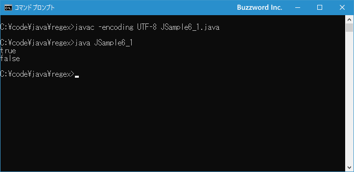

- Home ›
- Java入門 ›
- Java正規表現の使い方
正規表現パターンにおけるエスケープ処理
Java で正規表現パターンを文字列で記述するとき、正規表現において特別な意味を持つ「.」や「*」などの文字があります。このような文字を特別な意味を持つ文字ではなく、一つの文字として扱う場合にはバックスラッシュ(\)を使ったエスケープ処理が必要となります。ここでは Java の正規表現でパターンを記述する場合のエスケープ処理について解説します。
特別な意味を持つ文字をエスケープする
正規表現のパターンで使われる文字の中にはドット(.)やプラス(+)などのように特別な意味を持つ文字があります。これらはメタ文字と呼ばれます。例えば次のような正規表現リテラルで見てみます。
String regex = "a.b";
文字のまま解釈すると、このパターンは「a」「.」「b」の 3 つの文字が連続している文字列にマッチするように見えます。ただパターンの中でドット(.)は任意の 1 文字とマッチするメタ文字のため、この "a.b" というパターンは "a" で始まり "b" で終わる 3 文字の文字列とマッチします。そのため、 "a.b" だけでなく "axb" や "a8b" などの文字列ともマッチします。
import java.util.regex.*;
String regex = "a.b";
Pattern p = Pattern.compile(regex);
Matcher m1 = p.matcher("a.b");
System.out.println(m1.matches()); // true
Matcher m2 = p.matcher("axb");
System.out.println(m2.matches()); // true
このように正規表現ではパターンの中で使用した場合に特別な意味を持つ文字がいくつか存在します。このような文字に対して特別な意味を持つ文字ではなく、単なる文字としてマッチさせたい場合には、文字の前にバックスラッシュ(\)を記述してエスケープを行います。( Windows 環境は場合はバックスラッシュではなく円記号を使います)。
先ほどのパターンであれば "a.b" ではなく "a\.b" と記述することで「a」「.」「b」の 3 つの文字が連続している文字列だけにマッチするようになります。
String regex = "a\.b";
先ほどのサンプルを次のように変更してみました。
import java.util.regex.*;
String regex = "a\.b";
Pattern p = Pattern.compile(regex);
Matcher m1 = p.matcher("a.b");
System.out.println(m1.matches());
Matcher m2 = p.matcher("axb");
System.out.println(m2.matches());
すると今度はコンパイル時に「エラー: エスケープ文字が不正です」というエラーが発生しました。
これは Java の文字列リテラルの中でバックスラッシュ(\)は特別な意味を持つためで、文字列の中でバックスラッシュを記述する場合は、バックスラッシュを使って \\ のようにエスケープして記述する必要がありります。
少しややこしいですが、正規表現として特別な意味を持つ文字をエスケープするためにバックスラッシュを記述しますが、バックスラッシュは文字列の中で特別な意味を持つため、文字列の中でバックスラッシュを単なる文字として扱うようにバックスラッシュをバックスラッシュを使って使ってエスケープします。
そこで先ほどのパターンを文字列の中で記述するときには "a\.b" ではなく "a\\.b" と記述します。
String regex = "a\\.b";
先ほどのサンプルを次のように変更してみました。
import java.util.regex.*;
String regex = "a\\.b";
Pattern p = Pattern.compile(regex);
Matcher m1 = p.matcher("a.b"); // true
System.out.println(m1.matches());
Matcher m2 = p.matcher("axb"); // false
System.out.println(m2.matches());
今度はドット(.)が任意の 1 文字という意味ではなく文字としてのドット(.)として扱われるので "a.b" にはマッチしますが "axb" にはマッチしなくなります。
それでは簡単なサンプルプログラムを作って試してみます。テキストエディタで次のように記述したあと、 JSample6-1.java という名前で保存します。
import java.util.regex.*;
class JSample6_1{
public static void main(String[] args){
String regex = "a\\.b";
Pattern p = Pattern.compile(regex);
Matcher m1 = p.matcher("a.b");
System.out.println(m1.matches());
Matcher m2 = p.matcher("axb");
System.out.println(m2.matches());
}
}
コンパイルを行います。
javac -encoding UTF-8 JSample6_1.java
その後で、次のように実行してください。
java JSample6_1

パターンの中でドット(.)は任意の 1 文字とマッチする特別な文字ですが、バックスラッシュを使ってエスケープを行ったので特別な意味を持たないドット(.)として扱われるようになりました。
文字列の中で正規表現のメタ文字を記述する場合
正規表現のパターンの中でドット(.)やアスタリスク(*)は特別な意味を持ちますが、バックスラッシュと 1 文字の組み合わせで特別な意味を持つ定義済みの文字クラスと呼ばれるものがあります。例えば \d は 0 から 9 までの数値とマッチしますし、 \s はタブや改行などの空白文字とマッチします。
これらの定義済み文字クラスを使ったパターンを Java の文字列に記述する場合も先ほどと同じ注意が必要です。例えば "a" で始まり、 1 文字の数値が続き、最後に "b" で終わるパターンは "a\db" と記述することができますが、次のように記述してしまうとコンパイル時に「エラー: エスケープ文字が不正です」というエラーになります。
String regex = "a\db";
これは Java の文字列リテラルの中でバックスラッシュ(\)は特別な意味を持つためで、文字列の中でバックスラッシュを記述する場合は、バックスラッシュを使って \\ のようにエスケープして記述する必要がありります。実際には次のように記述します。
String regex = "a\\db";
このようにメタ文字をエスケープするために記述したバックスラッシュだけでなく、定義済みメタ文字のようにバックスラッシュ＋1文字のようなものも、実際に文字列の中で記述するときはバックスラッシュでエスケープする必要がある点に注意してください。
パターンの中をまとめてエスケープする(Pattern.quote)
パターンの中で特別な意味を持つ文字をエスケープするにはバックスラッシュを直前に記述すればいいのですが、パターンの中にエスケープを行いたい特別な文字が多数含まれる場合、一つ一つエスケープしていくとパターンが分かりにくくなっていきます。
例えばドット(.)や [ や ] のようにパターンの中で特別な意味を持つ文字が複数含まれている [2017.10.04] のような文字列そのものとマッチするパターンを記述する場合、 \[2017\.10\.04\] のように一つ一つエスケープする必要があります。
String regex = "\\[2017\\.10\\.04\\]";
このようにパターンの中にエスケープする文字が複数含まれている場合には、 \Ｑ と \E を使うと便利です。 \Q と \E で囲まれた文字列の中の含まれる文字はエスケープしなくても特別な意味を持たなくなります。
\Ｑパターン文字列\E
先ほどのパターンであれば \Q[2017.10.04]\E のように記述することで、一つ一つエスケープする必要がなくなります。
String regex = "\\Q[2017.10.04]\\E";
または Pattern クラスで用意されているクラスメソッドの quote メソッドを使用することもできます。 quote メソッドは引数に指定したパターン文字列を特別な意味を持たない単なる文字列になるように変換して戻してくれます。書式は次のとおりです。
public static String quote(String s)
パラメータ:
s - リテラル化する文字列
戻り値:
リテラル文字列置換
1 番目の引数に特別な意味を持つ文字が含まれるパターン文字列を指定すると、文字列を \Q と \E で囲んでバックスラッシュをエスケープした文字列を戻り値として返します。
例えば先ほどのパターンであれば Pattern.quote メソッドを使って次のように記述できます。
String regex = Pattern.quote("[2017.10.04]");
\Q と \E で囲んでも、 Pattern.quote メソッドを利用してもまったく同じですので、使いやすいよう方を利用してください。
それでは簡単なサンプルプログラムを作って試してみます。テキストエディタで次のように記述したあと、 JSample6-2.java という名前で保存します。
import java.util.regex.*;
class JSample6_2{
public static void main(String[] args){
String regex = Pattern.quote("A.B.C.D");
Pattern p = Pattern.compile(regex);
Matcher m1 = p.matcher("A.B.C.D");
System.out.println(m1.matches());
Matcher m2 = p.matcher("AABBCCDD");
System.out.println(m2.matches());
}
}
コンパイルを行います。
javac -encoding UTF-8 JSample6_2.java
その後で、次のように実行してください。
java JSample6_2
パターンの中でドット(.)は任意の 1 文字とマッチする特別な文字ですが、 Pattern.quote メソッドを使って特別な意味を持たないようにエスケープを行ったので文字としてのドット(.)として扱われるようになりました。
-- --
Java の正規表現でパターンを記述する場合のエスケープ処理について解説しました。
( Written by Tatsuo Ikura )

著者 / TATSUO IKURA
初心者～中級者の方を対象としたプログラミング方法や開発環境の構築の解説を行うサイトの運営を行っています。